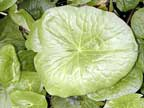

Marsh marigold
Caltha palustris
Other names
king cup, cowslip (nb, some species of Primula are more commonly called cowslip)
Description
Looks like a large celandine. Up to 60cm high, heart shaped leaves about 10x15cm, yellow flowers about 30mm diameter and spiky fruit. Only grows on edges of water.
Similar plants
Closely related to the buttercups (not marigolds). The native korikori (Ranunculus insignis) is very similar and probably toxic, but only grows in alpine meadows where stock are unlikely to come across it.
Distribution
Occasional escape from gardens along streambanks.
Toxin
The plant may contain protoanenomin, although marsh marigolds are reported to contain much less than buttercups. Protoanemonin is unstable and polymerises to crystalline nontoxic anemonin. Toxicity is low as the production of protoanemonin deters most animals from ingesting sufficient amounts. Protoanemonin causes erythema and blistering of the skin. All parts of fresh plants are poisonous. Toxic levels are the highest in spring.
Species affected
No reports from NZ, mainly cattle overseas.
Clinical signs acute
In most domestic animals (cattle in particular), poisoning produces an excessive flow of saliva, soreness (sometimes with ulceration) of the mouth, and abdominal pain. In severe cases, this is followed by diarrhoea, with the passage of black faeces, and blood stained urine. Animals will become weak and stagger and show impaired hearing and sight. Some animals will die and death is preceded by severe convulsions.
Clinical signs chronic
Post mortem signs
Acute inflammation of the stomach and intestines. Mouth and throat lesions. Rumen contents may contain a large amount of buttercup. Renal damage is sometimes evident.
Diagnosis
From history, clinical signs, post mortem findings.
Differential diagnosis
Treatment
Mild purgatives, demulcents. Potassium permanganate protects the skin from irritant action of Protoanemonin.
Prognosis
Fatal poisoning rare.
Prevention
Selective weedkillers. Beware wilted plants may be more palatable than fresh ones.
References
Conner H.E. The Poisonous Plants In New Zealand. 1992. GP Publications Ltd, Wellington
Cooper M R, Johnson A W. Poisonous Plants and Fungi in Britan: Animals and Human Poisoning. Her Majesty’s Stationary Office. London. 1998
|
 |
|
|
|
|
||
|
|
||